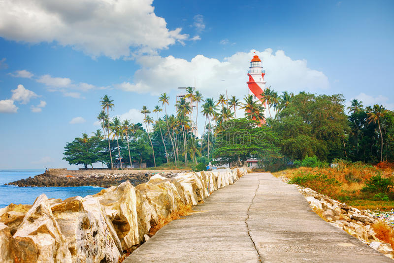
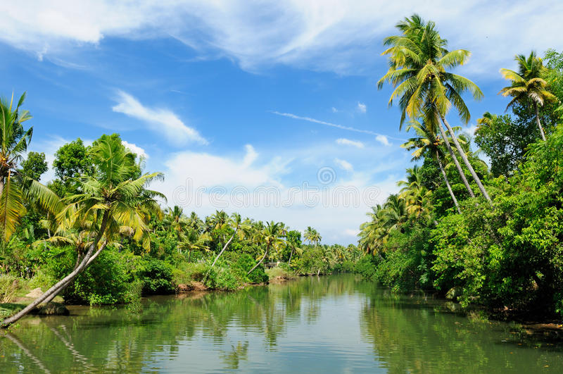

Photo Gallery of Kollam





Kerala Tourism
From Ibn Batuta to Marco Polo, legendary explorers have talked about the prominence of Kollam district for centuries. Blessed with a long coastline, it is the de facto leader of the cashew trade and processing industry in India. It is historically remembered as being among the most important ports which were part of the legendary Spice Trade. Over a third of its surface is covered by the great Ashtamudi Lake, the entrance to the renowned backwaters of Kerala. Get onboard a houseboat and let the beautiful landscape transport you to an age where nature resided in our midst. An eight hour ride via this route to Alappuzha is among the most sought-after and picturesque trips that Kerala has to offer. Once known as Quilon, Kollam has a host of other attractions. People love visiting the Ashtamudi Backwaters along with the Thenmala Ecotourism Centre, Palaruvi Waterfalls, Jatayupara and Alumkadavu. The area is home to some of the most ornate temples built in traditional Kerala style. These are important relics of Kollam's glorious past. One can also go and relax at the nearby beaches, namely Kollam, Thirumullavaram and Thangasseri
Kerala Tourism